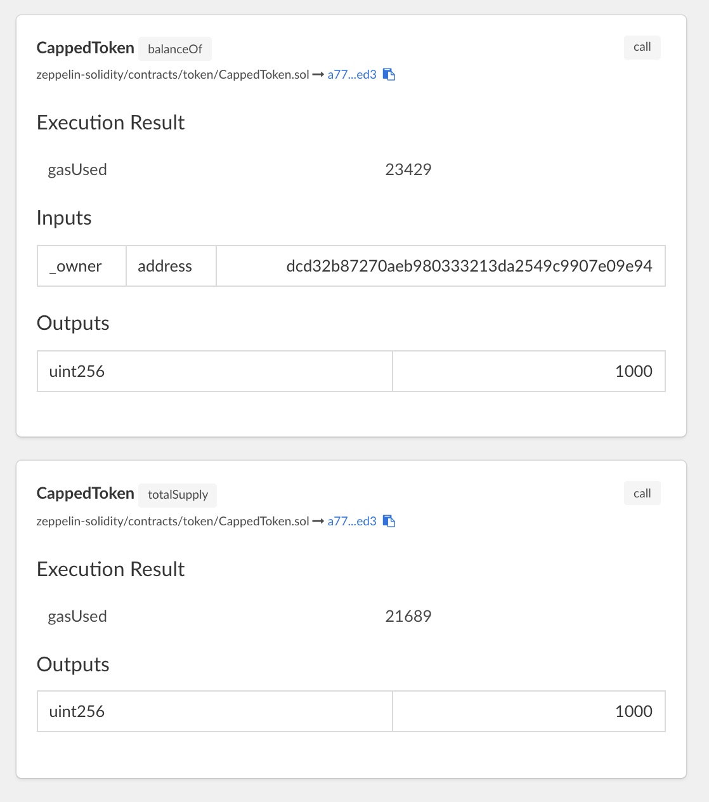

ERC20 Token
In this chapter we will deploy an ERC20 token on QTUM. All ERC20 compliant token contracts support a common set of methods:
contract ERC20 {
function totalSupply() constant returns (uint totalSupply);
function balanceOf(address _owner) constant returns (uint balance);
function transfer(address _to, uint _value) returns (bool success);
function transferFrom(address _from, address _to, uint _value) returns (bool success);
function approve(address _spender, uint _value) returns (bool success);
function allowance(address _owner, address _spender) constant returns (uint remaining);
event Transfer(address indexed _from, address indexed _to, uint _value);
event Approval(address indexed _owner, address indexed _spender, uint _value); }
}Because all tokens share the same interface, it is much easier for wallets and exchanges to support all the different tokens out there in the wild.
In what follows, we will deploy the CappedToken, implemented by OpenZeppelin. We won't need to modify the contract in any way to make it work on QTUM.
The CappedToken is an ERC20 compliant token, inheriting the basic functionalities from both StandardToken and MintableToken.
In particular,
StandardTokenimplements the ERC20 interface.MintableTokenadds themint(address _to, uint256 _amount)method, to create new tokens out of thin air.CappedTokenadds limit to the max supply of tokens that could be minted.
Deploy CappedToken
Create the project directory, and clone the zeppelin-solidity repository to the project directory:
mkdir mytoken && cd mytoken
git clone https://github.com/OpenZeppelin/zeppelin-solidity.gitFor this exercise, we'll start qtumd from scratch, in regtest mode:
docker run -it --rm \
--name myapp \
-v `pwd`:/dapp \
-p 9899:9899 \
-p 9888:9888 \
hayeah/qtumportalEnter into the container:
docker exec -it myapp shGenerate some initial balance:
qcli generate 600The Owner Address
The ERC20 token we deploy will be "owned" by a particular UTXO address. A few administrative methods are protected, such that only the owner of the contract may use them.
These methods are protected by the onlyOwner modifier, which checks whether the msg.sender is the contract's owner:
modifier onlyOwner() {
require(msg.sender == owner);
_;
}For example, the method mint makes sure that only the owner can use it:
function mint(address _to, uint256 _amount) onlyOwner canMint public returns (bool)Create The Owner Address And Fund It
Let's generate an address to act as the owner.
qcli getnewaddress
qdgznat81MfTHZUrQrLZDZteAx212X4WjjThere's nothing special about this address. You could use the address of any UTXO in your wallet.
Let's fund the owner address with 10 QTUM, to pay for gas when we deploy our contract later:
qcli sendtoaddress qdgznat81MfTHZUrQrLZDZteAx212X4Wjj 10
cf652f54e6a6dde3e60fa4e38eee1c529bf4ecf3f8424c7ac7ef9717850cc984After the payment confirms, you should that there is one UTXO for this owner address:
qcli listunspent 1 99999 '["qdgznat81MfTHZUrQrLZDZteAx212X4Wjj"]'
[
{
"txid": "cf652f54e6a6dde3e60fa4e38eee1c529bf4ecf3f8424c7ac7ef9717850cc984",
"vout": 1,
"address": "qdgznat81MfTHZUrQrLZDZteAx212X4Wjj",
"account": "",
"scriptPubKey": "76a91437158152a9768477770ecb7a9e55a5875b9f35b088ac",
"amount": 10.00000000,
"confirmations": 1,
"spendable": true,
"solvable": true
}
]Finally, we'll need to configure the deployment tool solar to use this particular address as the owner:
export QTUM_SENDER=qdgznat81MfTHZUrQrLZDZteAx212X4WjjWe are now ready to deploy our token contract.
Deploy The Token Contract
The CappedToken constructor requires the _capacity parameter, to specify the maximum number of tokens we can mint:
function CappedToken(uint256 _capacity)It takes quite a few steps to deploy a contract:
- Use the solidity compiler to compile the contract into bytecode.
- ABI encode the
_capacityparameter into bytes. - Concatenate 1 and 2 together, then make a
createcontractRPC call to qtumd. - Wait for transaction to confirm.
- Record the address of the contract, and owner of the contract, for later uses.
The solar Smart Contract deployment tool (included in the container) handles all of this for you.
To deploy the CappedToken contract, specifying 21 million as the capacity by passing in the constructor parameters as a JSON array (remember to set QTUM_SENDER):
solar deploy zeppelin-solidity/contracts/token/ERC20/CappedToken.sol \
'[21000000]'Then solar waits for confirmation:
🚀 All contracts confirmed
deployed zeppelin-solidity/contracts/token/CappedToken.sol =>
a778c05f1d0f70f1133f4bbf78c1a9a7bf84aed3The contract had been deployed to a778c05f1d0f70f1133f4bbf78c1a9a7bf84aed3. (You'd get a different contract address).
The solar status command lists all contracts that had been deployed with solar:
solar status
✅ zeppelin-solidity/contracts/token/CappedToken.sol
txid: 457a5afe15686c0bd596635aeb78d4ff7d2bf6a75df66c7251e89ce4d9c8f6d3
address: 3db297ee4c225b45219d2a7aa68afea7f4e68832
confirmed: true
owner: qdgznat81MfTHZUrQrLZDZteAx212X4WjjNote that the contract's owner should be set to the QTUM_SENDER value we have specified earlier. If you did not set QTUM_SENDER to anything, a random UTXO from the wallet is selected, and that become the owner.
You can find more information about the deployed contracts in solar.development.json.
The Owner UTXO Address As Sender
The main difference between QTUM and Ethereum is that QTUM is built on Bitcoin's UTXO model, and Ethereum has its own account model, as we've seen in the QTUM UTXO chapter.
In Ethereum, the cost of a transaction is paid by an account. The amount paid is decremented from the account, but the account is still there.
UTXO, however, may be spent only once. So earlier we used an UTXO with the address qdgznat81MfTHZUrQrLZDZteAx212X4Wjj to deploy the contract. That UTXO is now gone, with its entire value spent.
So every time you act as the owner of a contract, you destroy the owner UTXO. And next time you want to act as the owner of the contract, you'd need a new UTXO with the same address. This could be very annoying if you had to do it manually.
Fortunately, when interacting with a contract, QTUM always create a new UTXO with the same address to replace UTXO that was used up.
Listing the UTXO for the owner address qdgznat81MfTHZUrQrLZDZteAx212X4Wjj, we see that, hey, there's still one UTXO, even though we already spent one:
qcli listunspent 1 99999 '["qdgznat81MfTHZUrQrLZDZteAx212X4Wjj"]'
[
{
"txid": "457a5afe15686c0bd596635aeb78d4ff7d2bf6a75df66c7251e89ce4d9c8f6d3",
"vout": 1,
"address": "qdgznat81MfTHZUrQrLZDZteAx212X4Wjj",
"account": "",
"scriptPubKey": "76a91437158152a9768477770ecb7a9e55a5875b9f35b088ac",
"amount": 8.78777200,
"confirmations": 61,
"spendable": true,
"solvable": true
}
]Note, however, that the transaction id 457a...f6d3 is different from the UTXO we had cf65...c984. This is a different UTXO, and its amount is 10 minus the fee we paid to deploy the contract.
The amount 8.78777200 is the "change". For a transaction that interacts with a contract, the "change" is paid to the sender. Whereas in a typical payment transaction, the change is paid to a newly generated address controlled by the wallet.
The upshot is that despite the vastly different accounting model between Bitcoin UTXO and Ethereum account, in QTUM they behave in very similar ways.
Using The ABIPlayer
The solar.development.json file stores information about the deployed CappedToken contract. You can load this file into the ABIPlayer to interact with any contracts deployed with solar.
Make sure that the docker container is running, and visit: http://localhost:9899/abiplay/

Load the file, and you should see a list of available contracts and methods:

The gray buttons are readonly methods (call only). The blue buttons support both send and call.
Let's click on the owner button, to get the owner of this contract:

And we see the owner address returned as a hexadecimal address:

We can convert it back to the base58 UTXO address:
qcli fromhexaddress dcd32b87270aeb980333213da2549c9907e09e94
qdgznat81MfTHZUrQrLZDZteAx212X4WjjMint With ABIPlayer
Let's mint some coins for the contract owner! Because we are sending the receiver address into the smart contract, we'll need to format the address in hexadecimal instead of base58.
To mint 1000 tokens:

Click send, and you'll see that the transaction is waiting for authorization:

This request requires your authorization because it costs QTUM. Visit the authorization UI (http://localhost:9899/) to approve it:

Wait for confirmation, and you should see information about the transaction:

You may now call balanceOf and totalSupply to check if the owner had received the minted tokens, and that the supply had increased accordingly:

Conclusion
In this chapter we have deployed a basic ERC20 token, and encounter a few tools along the way:
solar deployto compile & create a contract.solar prefundto create UTXOs that has the same address as the contract owner.- Use ABIPlayer to interact with deployed contracts: http://localhost:9899/abiplay/
- Authorize requests that cost money: http://localhost:9899/